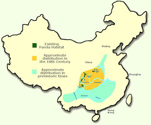

Juvenile (1-2 years): Run, climb, and eat A LOT of bamboo.
Adult (4-6 years): Mates and grows independant
Panda Habitat

Pandas reside in temperate forests in the hilly mountains of Southwest China. The scattered spots on the map represent the habitat in which the panda lives today. This area has shrunk into 20 scattered habitats. These areas are protected by WWF since habitat loss due to farming and deforestation is the Panda's main worry for extinction. In 1970s there were only around 1100 pandas in the wild globally. Because of this scarce quantity, the Giant Panda was titled as "endangered". Since then, wildlife organizations have been hard at work to boost population growth through expanding bamboo forests. These bamboo forests are crucial to the pandas's survival since it makes up 99% of their diet. In 2016, the number of wild Giant Pandas grew by 17% (1180). This growth transitioned their status to "vulnerable" which was a huge achievement for the pandas, wildlife organizations, and anyone who is interested in pandas. Today, there are 1800 pandas in the wild today. These pandas are still not off the hook from danger, since the growing population in China calls for jobs and homes which both generally recquire space. The continuation of infrastructure development will most likely continue to disturb pandas, especially since only around half of Panda territory is protected.